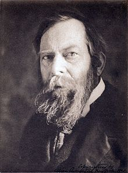
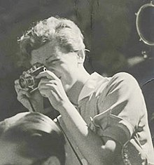
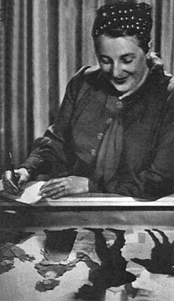

Primordial Chaos
- Hilma af Klint -
|
She was a Swedish artist and mystic whose paintings are considered among the first major abstract works in Western art history. A considerable body of her work predates the first purely abstract compositions by Kandinsky, Malevich and Mondrian. She belonged to a group called "The Five", comprising a circle of women inspired by Theosophy, who shared a belief in the importance of trying to contact the so-called "High Masters"—often by way of séances. Her paintings, which sometimes resemble diagrams, were a visual representation of complex spiritual ideas. According to H.P. Blavatsky, mediumship was a faulty practice, leading its adepts on the wrong path of occultism and black magic. However, during their meeting, Steiner stated that af Klint's contemporaries would not be able to accept and understand her paintings, and it would take another 50 years to decipher them. Of all the paintings shown to him, Steiner paid special attention only to the Primordial Chaos Group, noting them as "the best symbolically". After meeting Steiner, af Klint was devastated by his response and, apparently, stopped painting for 4 years. Steiner kept photographs of some of af Klint's artworks, some of them even hand-coloured. Later the same year he met Wassily Kandinsky, who had not yet come to abstract painting. Some art historians assume that Kandinsky could have seen the photographs and perhaps was influenced by them while developing his own abstract path. Later in her life, af Klint made a decision to destroy all her correspondence. |

|
Two African Hairstyles
- Loïs Mailou Jones -
|
Loïs Mailou Jones (1905 – 1998) was an extraordinary artist and educator whose career spanned seven decades. Despite her significant contributions to the art world, her relative obscurity for much of her career can be attributed to systemic issues surrounding race, gender, and the art world’s focus during her lifetime. Jones was active during a time when African American artists were systematically excluded from major galleries, museums, and art institutions. Black artists were rarely taken seriously by the predominantly white art establishment, and their work was often categorized as "folk art" or "craft" rather than "fine art." Black artists faced challenges accessing the same level of training, networks, and sponsorships as their white counterparts, limiting opportunities for exposure and recognition. Also, as a woman in the early and mid-20th century, Jones faced additional challenges in gaining recognition in a male-dominated field. Women artists, regardless of race, were frequently marginalized and overlooked. |
The Lovers' Boat
- Albert Pinkham Ryder -
|
Albert Pinkham Ryder (1847–1917) was a highly original American painter whose work has had a lasting influence on modern art. Despite this, Ryder was obscure during his lifetime and even in the years after his death. "The Lovers' Boat" depicts a dreamlike scene of two figures in a boat gliding across a shimmering, moonlit sea. Its romantic and mystical subject matter was out of step with the tastes of Ryder’s time, which leaned more toward realism and historical narratives. This kind of imagery, focused on mood and emotion, was difficult for contemporary audiences to understand or categorize. Ryder's visionary and poetic style, characterized by dreamy, mysterious, and often abstract landscapes and allegorical scenes, was not easily understood or appreciated by his contemporaries. His art anticipated modernist movements like Symbolism and Abstract Expressionism, but these styles only gained traction after his death. Ryder's fixation on themes of love, nature, and the spiritual journey—as seen in "The Lovers' Boat" — was considered overly romantic by the standards of his contemporaries. These themes, however, would later resonate with modernists who appreciated his visionary and deeply personal approach. |
 |
Deathbed Photo
- Gerda Taro -
|
Gerda Taro worked closely with Robert Capa, her romantic partner and collaborator. Together, they covered the Spanish Civil War (1936–1939) and published images under the shared credit "Capa & Taro." Over time, Capa's fame as a legendary war photographer overshadowed Taro's contributions. Many of her photographs were incorrectly attributed to Capa, and her independent work was largely forgotten. Garo's career was tragically short. She died at the age of 26 in a vehicle collision while covering the Spanish Civil War. Her premature death cut short her potential to establish a broader legacy and body of work. Her death also meant that she could not actively promote or archive her work, leaving her legacy to be shaped by others. As a woman in a male-dominated field, Taro faced systemic challenges to gaining recognition. Her achievements were often downplayed, while male photographers were more readily celebrated and included in historical narratives. Her innovative approach to war photography—focusing on the human cost of conflict and capturing moments of intimacy and resilience—was sometimes dismissed as less significant than the more action-oriented images preferred by the male-dominated press. |
 |
The Adventures of Prince Achmed
- Lotte Reiniger -
|
The Adventures of Prince Achmed (German: Die Abenteuer des Prinzen Achmed) is a 1926 German animated fairytale film by Lotte Reiniger. It is the oldest surviving animated feature film. (Two earlier ones had been made in Argentina by Quirino Cristiani, but they are considered to be lost.) The Adventures of Prince Achmed features a silhouette animation technique Reiniger had invented that involved manipulated cutouts made from cardboard and thin sheets of lead under a camera. The technique she used for the camera is similar to Wayang shadow puppets, though hers were animated frame by frame, not manipulated in live action. The original prints featured color tinting. Reiniger also used the first form of a multiplane camera in making the film, one of the most important devices in pre digital animation. During the early 20th century, filmmaking was heavily dominated by men, and women’s contributions were often undervalued or overlooked. Despite her pioneering work, Reiniger’s achievements were not celebrated as widely as her male contemporaries, such as Walt Disney or Georges Méliès. Film history has historically focused on male innovators and mainstream narratives, sidelining women’s work, especially in niche or experimental areas. Reiniger's use of silhouette animation, while innovative and visually stunning, was not mainstream. This made her work harder to categorize alongside more prominent animation styles, such as hand-drawn cel animation popularized by studios like Disney. Her intricate, shadow-puppet-inspired animations had strong ties to German Expressionism and traditional art forms, which may not have resonated widely with international audiences used to different styles. |
 |